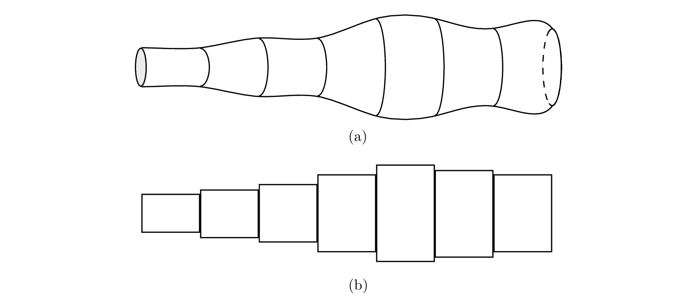
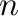
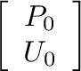
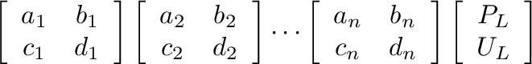
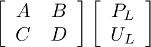
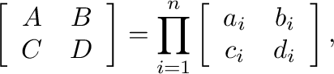
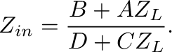
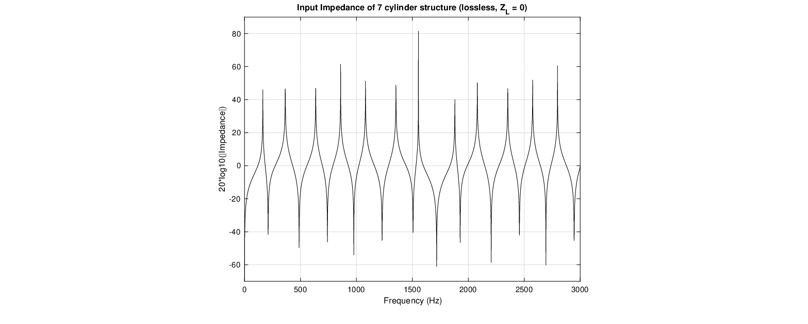

Figure 3:
A non-uniform bore (a) and its approximation in terms of cylindrical sections (b).

For a sequence of  cylindrical sections, the input variables for each section become the output variables for the previous section. The transfer matrices can then be cascaded as



(10)
where

(11)
and the input impedance found for the entire acoustic structure as

(12)
Figure 4:
Input impedance magnitude for 7 cylindrical segment structure with no losses and (see example2.m script).

Presented at the 180th Meeting of the Acoustical Society of America, 8-10 June 2021 by Gary P. Scavone.